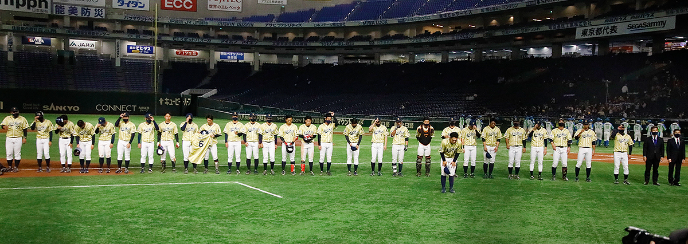
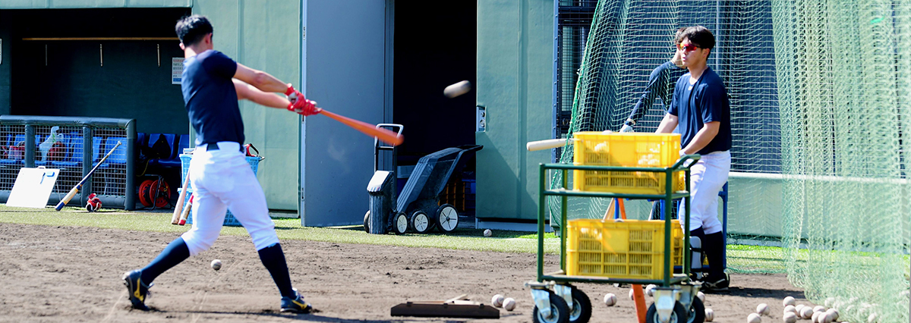

プロローグ
prologue
昨シーズンを乗り越えて
昨シーズンは忘れられないシーズンとなった。4月、即戦力ルーキーとして大活躍した中井選手との突然の別れがあった。
共に戦えたのは1年足らず・・・チームにとってこれほど辛く悲しい事は無い。
社会状況も大きく変わり、公式戦は9月から都市対抗予選、伊勢・松坂大会、都市対抗本戦の3大会に出場するのみのシーズンとなった。
もちろん、誰もが初めての経験であったが、活動自粛や大会延期・中止などという措置についても目標を見失う事無く、チームはただ一つ“中井選手と共に戦う”という信念だけを持ち、活動を行った。
目標は（都市対抗）日本一、最低でも昨年のベスト8以上だった。しかし、結果はベスト8・・・
日下部主将は「中井に『優勝するにはまだまだ力が足りませんよ。』と言われている様です。」と語り、個人的には本当に悔しさしかないシーズンだったが、冷静に成果を分析するのであれば、まだまだ強くなれる可能性を持った成長過程のチームである事を実感できた事だと振り返った。
配置転換
新スローガン“勇往邁進～Driven by regret～を掲げ、それを具現化すべく一部のメンバーに配置転換が行われた。
まず、梅津選手兼任コーチが専任コーチとなった。抜群の守備で主将としても活躍した存在であるが、監督の一番の狙いは、昨年まで高本コーチが指導して来た“とにかく強い打球を飛ばす打撃”がある程度形になって来たと判断し、今年はさらに“小技や走塁を絡めた攻撃”へと進化させて行って欲しいという事であった。
梅津コーチが“打撃”を軸に幅広い“攻撃”を創出していくシーズンとなる。
次に中村選手が兼任コーチとなった。本人は「兼任と言っても特に監督・コーチ陣から『何をやってくれ』と使命を預かっている訳でも無く、（首脳陣による）チームミーティングには出席しているが、コーチングしている感覚はあまり無い。」という。
ただ、周囲とのコミュニケーションは活発になり、気になる事は自分から進んで若手に聞くし、逆に気づいた事は常に指摘してあげるのだという。
それこそがまさに与えられた役割であり、求められているのは「選手9：コーチ1のスタンスでいいから、とにかく積極的に発言していって欲しい。」という事だった。ずっとセンターラインを守り、主軸を打って来た“チームの誰もが認める選手”の言葉には多大な影響力がある。
今回のスローガンも他ならぬこの人の発案である。
最後に、吉川マネージャー。入部した時から“左のエース”として活躍し続けた投手が現役を引退。周囲は口を揃えて「まだ引退は早いんじゃないか？」と言うが、本人からは「僕はやり切ったので。」という真っすぐな答えが返ってくる。履正社-関大を経て社会人初年度からエースというまさにエリートであるが、監督は「決して驕った所が無く、礼儀正しく常に一歩引いて俯瞰で物を見る事が出来る男で、イチ社会人としても完成度の高い人材である。」という事で裏からチームをサポートする立場に回った。
背番号変更
さらに配置転換ではないが、背番号を変更した選手が2人いる。
まずは“13番”から“47番”へ変更した宅和投手。憧れの工藤公康投手の背番号を着用し、さらなる飛躍を誓う。
緊迫した場面で（社会人野球界では珍しい）47番を着けたダイナミックなフォームで150キロ近いボールを投げ込んで来る左腕がマウンドに上がれば、相手ベンチには「タダモノではない」という緊張感が漂うだろう。
もう1人は長田選手。“1番”から“13番”に変更した。いや「13番に戻した」というのが正しい。
野手で“13番”と言えば、御存じアレックス・ロドリゲス（A-ROD）。走攻守揃った大型内野手だが、41歳までの22年間現役を続けた息の長い選手でもあった。今回は「A-RODの様に長く活躍できる(素質を持った)大型内野手として、さらに発奮してもらいたい。」という監督からの打診であったが、本人も「入部した時に当時の佐々木誠監督が『A-RODの様になれ！』と着けてくれた大事な番号なので、初心に帰って頑張ります。」と背番号と共に大きくなった背中で新たなシーズンを迎えていた。
今季の体制
日下部主将・山田副将の体制は昨年と変わらず、チームリーダー2人はもちろん攻守両面でチームを牽引するのだが、グラウンドの外でも求められるアクションがある。チームの顔として、社会人野球全体を盛り上げていくインフルエンサーとしての情報発信である。
今やツイッターやインスタグラムで技術向上に関する知識や試合結果など、野球に関する情報発信は当たり前の時代ときており、社会人野球ファン層拡大、少年・少女プレイヤー達の裾野拡大といった面でもどんどん積極的に情報発信するべきだというのがチームリーダーそして監督の共通見解である。
トレーニング・コンディショニング
Training & conditioning
沖浦トレーナーのプログラム
トレーニングはもちろん、コンディショニング面も全て管理する沖浦トレーナー。
ここ和歌山では全国的に猛威を振るっている“花粉症”に苦戦するメンバーが多かったが、ホーム（淀グラウンド）ではなかなか実施できない“傾斜のある上り坂ダッシュ”、“宿舎からスタジアムまで山道コースの長距離ランニング”等負荷をかけた基礎メニューを設定している。
取材初日の朝、スタジアムに着くと松尾投手が軽やかに坂を下って来た。違う方向からエース浜崎投手もやって来る。「実は僕は短い方のコースで来たんですよ。」と苦笑していたが、それでも8キロ近い距離になるそうで、ゼーゼー言いながら屈みこむ様な事もなく、息を整えてクールダウンを行っていた。
栄養補給面でもプログラムが設定されていて、朝食後約2時間おきに菓子パンやおにぎり、バナナ等軽食を摂取して、シーズンを乗り切るための身体作りを各自に意識させている。昨シーズンの成果という面では松尾投手、小泉捕手、林投手といった若いメンバーが一回り大きく・逞しくなり、各種数値も軒並みアップしているという。
身体のケア
実は前日の対外試合の初回守備でルーキー1人が負傷したそうで、第2クール途中で離脱する形になってしまったそうだ。
トレーナーは「私の立場から言うと、まだまだシーズン前の調整段階なので無理はするなという所なのですが、入部したてで、初の対外試合にスタメンで出場・・・となると否が応でも張り切ってしまう気持ちは十分理解できるので、これから自分でその辺をコントロール出来る様に伝えていってあげるしかないですね。」と苦い表情だった。
大原監督も「野球にケガは付き物。とは言え、自分も常に痛みに耐えながらプレイして来た辛い経験があるので、若い選手達には絶対にそんな経験はさせたくない。指導陣の手で最善の注意を払って防いでいきたい。」と気を引き締め直していた。
選手達は細かい事でもすぐに信頼するトレーナーの指示を仰ぐ。
この日も松尾投手が痛めた指先をトレーナーに見せて、ケアについて相談していた。
本人は「吉本投手らベテランクラスになると、自分のスタイルを確立しているので、僕のいう事なんて聞いてくれませんよ。」と謙遜しながら笑っていたが、室内練習場ではトレーナーのメニューリストを何度もチェックしながら、バランスボールやチューブ、フットワーク、ストレッチ等回数を忠実にこなす吉元投手、浜崎投手らの姿があった。
2021年の攻守
Offense and defense in 2021
2021年の守備

大原監督着任時から一貫してチームのベースになっているのは“（キャッチャーを中心とする）守りの野球”だ。
レギュラーの顔触れが変わろうと打力・機動力が上がろうと、そのスタンスが変わる事は無い。「ゲームの中で流れを渡さなければ負ける事は無い。だから、チーム内で繰り返し意識させているのが“攻守の切替え”なんです。」と監督は語る。
昨年の公式戦でも内野ゴロエラーや外野への打球の落下点判断ミスなどがあった。これらの解決について、一色HCは「こればっかりはノックの数を増やし、体で覚えて自信をつける事で精神面も強化していく・・・という反復しかないんです。」という。少年時代から数えきれないほどの打球を捕って来た選手たちも、土や芝、人工芝にぬかるんだ泥等、様々なシーンを想定して日々基礎練習を繰り返していくのだ。
投手陣に関しては、「ゲームを作れる先発タイプが揃っていれば、それを軸にブルペン陣を構成していけばいいと思っている。左の先発が入ってくると面白くなる。」と一色HCは語る。確かにここ2年は浜崎、大江、萩原の3投手が先発としてスタンバイして大会に臨んでいた。今年はそこに左右両先発タイプの本格派2投手が加わり、楽しみな競争が始まっている。
バッテリーを担当する田中コーチは「私が練習メニューを設定してはいますが、投手専門ではないので、野田臨時コーチに投手の技術的な部分やアドバイスをお願いしていて、何より吉元・浜崎といったキャリアのあるメンバーが先頭に立って真面目に黙々とトレーニングをこなし、他のメンバーを引っ張っていってくれているので、充実したトレーニングになっている様です。」と語っていた。やるべき人がやるべき事をしっかりとやれば周囲はそれに連動し、全体がうまく進んでいくという好例なのだ。
2021年の攻撃
鋭いスイングで強い打球を飛ばす打撃に小技や走塁を絡めて織りなす今シーズンの攻撃スタイル。
永松コーチはフリーバッティングで打撃投手を務めていたかと思うと、1塁ベース上でリードからの牽制対策帰塁やスタートダッシュといったランナー指導を行ったりと休むことなく攻撃全体の連動したイメージを選手に植え付けている。
日下部主将はチームとしてまだまだ基礎的な打撃力も足りないと感じていて、「自分や（昨シーズン四番を務めた）山田副将あたりはゲームの流れを変えたり、勝利を決定づける様な長打を打っていかないといけない。（もちろん、狙ってばかりいてはダメだが、）これまでホームランによって勢いづかれたり、ホームランによって負けた試合がいくつもあり、長打は時に1点以上の意味を持つんです。」と語ってくれた。
“攻撃”と言えば、昨年の都市対抗近畿地区第1代表決定戦で2回裏に打者14人・9得点の猛攻で相手エースをノックアウトした試合（12-1で勝利）が強烈な記憶として思い出される。一色HCは「相手投手には何度も抑えられていたので、アナライザーの尽力もあり、かなり対策を立てたんです。それがハマった形ですね。ただ、特に近畿のチームはウチの選手の分析も行っているので、今シーズンまた同じ様に攻略出来る保証はない。」と解説してくれた。


オープン戦
Exhibition game
3/11（木） VS SUBARU
日下部主将が「課題を見つける試合であり、前試合の課題を克服する試合でもある。」と語る今キャンプ2戦目の対外試合。
初回、死球で出塁した酒井選手が初球から盗塁を記録、次打者の主将が早いカウントから狙い球を振り抜き、センター前へ運ぶ形で今シーズン掲げる攻撃の形を早速具現化して見せる。
続く2回に先制され、どことなく彼らしくない投球を続けていた先発萩原投手が体調不良で急遽降板。
ランナーを背負った状況で緊急登板した大江投手はフルカウントから勝負に行った際どいボールを見送られ、押し出し四球で1点を追加される。
その後も小泉捕手が初打席でライト方向に技ありのヒットを放ち、ルーキー串畑選手が犠打でしっかり送る形や酒井選手がセンター前ヒットで出塁、初回に続いて盗塁を仕掛けたり、藤井選手が内野安打で出塁し、盗塁を決める等、単純に連打を重ねるだけではない打者・走者が連動した攻撃を披露してくれた。
中盤・後半は投手戦となり、7回からルーキー左腕波多野投手、最終回は田村投手が登板し、そのまま0-2でゲームセットとなった。
| TEAM | １ | ２ | ３ | ４ | ５ | ６ | ７ | ８ | ９ | 計 |
|---|---|---|---|---|---|---|---|---|---|---|
| SUBARU | ０ | 2 | ０ | ０ | ０ | ０ | ０ | ０ | ０ | 2 |
| ＮＴＴ西日本 | ０ | 0 | ０ | 0 | ０ | 0 | ０ | ０ | ０ | 0 |
| 打順 | 位置 | 打者 | 1回 | 2回 | 3回 | 4回 | 5回 | 6回 | 7回 | 8回 | 9回 | 打数 | 安打 | 打点 |
|---|---|---|---|---|---|---|---|---|---|---|---|---|---|---|
| 1 | 9 | 藤井 | 中飛 | 左飛 | 右安 | 3 | 1 | 0 | ||||||
| 石山 | 三ゴ失 | 1 | 0 | 0 | ||||||||||
| 2 | 6 | 野村 | 三ゴロ | 三振 | 中飛 | 三邪飛 | 4 | 0 | 0 | |||||
| 3 | DH | 酒井 | 死球（盗塁） | 中安 | 1 | 1 | 0 | |||||||
| 中村 | 一ゴロ | 三振 | 2 | 0 | 0 | |||||||||
| 4 | 7 | 日下部 | 中安※１ | 中飛 | 三振 | 中飛 | 4 | 1 | 0 | |||||
| 5 | 5 | 濱田 | 三振 | 一ゴロ | 一ゴロ | 3 | 0 | 0 | ||||||
| 西田 | 0 | 0 | 0 | |||||||||||
| 6 | 3 | 山田 | 右飛 | 右飛 | 遊ゴロ | 3 | 0 | 0 | ||||||
| 7 | 4 | 伊東 | 三振 | 三振 | 投ゴロ | 3 | 0 | 0 | ||||||
| 8 | 2 | 小泉 | 右安 | 三振 | 2 | 1 | 0 | |||||||
| 辻本 | 中飛 | 1 | 0 | 0 | ||||||||||
| 9 | 8 | 串畑 | 投犠打 | 三振 | 投ゴロ | 3 | 0 | 0 | ||||||
| 計 | 29 | 4 | 0 | |||||||||||
※１ ２塁走者酒井選手がホームタッチアウト
| 投手 | 回数 | 打者 | 投球数 | 安打 | 本塁打 | 三振 | 四死球 | 失点 | 自責点 |
|---|---|---|---|---|---|---|---|---|---|
| 萩原 | 1回1/3 | 9 | 24 | 3 | 0 | 2 | 2 | 2 | 2 |
| 大江 | 4回2/3 | 15 | 48 | 3 | 0 | 3 | 1 | 0 | 0 |
| 波多野 | 2 | 8 | 17 | 1 | 0 | 0 | 1 | 0 | 0 |
| 田村 | 1 | 4 | 12 | 1 | 0 | 0 | 0 | 0 | 0 |
| 計 | 9 | 36 | 101 | 8 | 0 | 5 | 4 | 2 | 2 |

{kind=link}
{kind=link}
{kind=link}
{kind=link}
{kind=link}
{kind=link}
{kind=link}
{kind=link}
{kind=link}
{kind=link}
{kind=link}
{kind=link}
{kind=link}
{kind=link}
{kind=link}
{kind=link}
{kind=link}
{kind=link}
{kind=link}
{kind=link}
{kind=link}
{kind=link}
{kind=link}
{kind=link}
{kind=link}
{kind=link}
{kind=link}
{kind=link}
{kind=link}
{kind=link}
{kind=link}
{kind=link}
{kind=link}
{kind=link}
{kind=link}
{kind=link}
{kind=link}
{kind=link}
{kind=link}
{kind=link}
{kind=link}
{kind=link}
{kind=link}
{kind=link}
{kind=link}
{kind=link}
{kind=link}
{kind=link}
{kind=link}
{kind=link}
{kind=link}
{kind=link}
{kind=link}
{kind=link}
{kind=link}
{kind=link}
{kind=link}
{kind=link}
{kind=link}
{kind=link}
{kind=link}
{kind=link}
{kind=link}
{kind=link}
{kind=link}
{kind=link}
{kind=link}
{kind=link}
{kind=link}
{kind=link}
{kind=link}
{kind=link}
{kind=link}
{kind=link}
{kind=link}
{kind=link}
{kind=link}
{kind=link}
{kind=link}
{kind=link}
出場選手インタビュー（小泉捕手）

（先発投手が2回途中に急遽降板する様な）予定外のケースが発生する事は稀にあるので、捕手は落ち着いてプレーしなければならない。
特に交代で登板する投手は試合に入れていない（雰囲気に乗り切れていない）状態なので、（リリーフした大江投手は経験ある投手ですが、）捕手は一歩引いて、俯瞰で状況を判断し、平常心で守る事が出来るリラックスしたシーンを作り出す事に注力します。
（リリーフ直後の）追加点のシーンは勝負に行ったボールなので仕方ないと思っています。
ただ、練習試合とは言え、負けるのは嫌です。どんな試合でも勝ちたいです。
負けてしまうと、やはり雰囲気が悪くなるんですよね・・・今日もせっかくルーキーからビッグプレー（センター串畑選手のダイビングキャッチ）が飛び出して、チーム全体が盛り上がったのに、負けてしまうと試合終了後のベンチで良かったプレーへの賞賛や確認、悪かったプレーへの指摘や助言などのコミュニケーションが活発にならなかったりするので・・・
総括
Summary
積極性・自主性
全体的に若いチームではあるが、もはや、監督・コーチがリードして、その指導に従順について来る様なチームではなく、選手から「ああしたい」「こうしたい」と声を上げ、コーチ・トレーナーを引っ張ってくる様な積極性・自主性を持ったチームとなっている。
指導陣も、誰がどのパートを管理するという区切りを厳密に設けず、その都度、声を掛けられた指導者が選手個々のトレーニングや研究に付添い、つぶさにチェックし、コミュニケーションを図り、チームミーティングの中でそれぞれが保有する細かい情報を交換する事で最新のチーム状況を共通認識としてアップデートしていく作業を繰り返している。実際にコーチが選手たちへアドバイスするシーンよりも選手同士でああでもないこうでもないと意見を交わすシーンを多く目にしたキャンプであった。
“勇往邁進”するために
今シーズンは「例年以上に前向きに全力でプレーする姿を見て欲しい。」と監督は言う。
その言葉通り、試合後にインタビューした小泉捕手からも山田副将からも「オープン戦でも勝ちたい。勝つとやっぱり雰囲気が違いますし、何より“勝ち癖”みたいなものがチームに染みついてきて、大舞台でも表れてくると思うんですよね。」という言葉が出て来る。
勇往邁進していくチームはしっかりと歩みを進めながら動き始めている。
▲
Menu